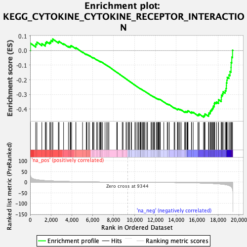
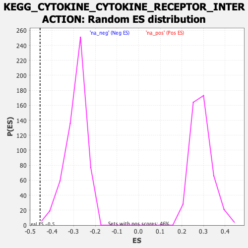

| | | Dataset | DE_genes |
| Phenotype | NoPhenotypeAvailable |
| Upregulated in class | na_neg |
| GeneSet | KEGG_CYTOKINE_CYTOKINE_RECEPTOR_INTERACTION |
| Enrichment Score (ES) | -0.45505744 |
| Normalized Enrichment Score (NES) | -1.5733947 |
| Nominal p-value | 0.0018382353 |
| FDR q-value | 0.16651611 |
| FWER p-Value | 0.679 |
Table: GSEA Results Summary

Fig 1: Enrichment plot: KEGG_CYTOKINE_CYTOKINE_RECEPTOR_INTERACTION
Profile of the Running ES Score & Positions of GeneSet Members on the Rank Ordered List
| SYMBOL | RANK IN GENE LIST | RANK METRIC SCORE | RUNNING ES | CORE ENRICHMENT | | 1 | PRLR | 28 | 31.446 | 0.0497 | No |
| 2 | PDGFRB | 532 | 12.677 | 0.0443 | No |
| 3 | CCL20 | 650 | 11.710 | 0.0573 | No |
| 4 | CXCL16 | 1122 | 8.864 | 0.0473 | No |
| 5 | CCL15 | 1456 | 7.605 | 0.0424 | No |
| 6 | TNFRSF11B | 1476 | 7.534 | 0.0537 | No |
| 7 | CXCL2 | 1577 | 7.191 | 0.0602 | No |
| 8 | IFNGR1 | 1873 | 6.382 | 0.0553 | No |
| 9 | KIT | 1981 | 6.130 | 0.0597 | No |
| 10 | IL17RB | 2003 | 6.081 | 0.0685 | No |
| 11 | TNFRSF13C | 2166 | 5.708 | 0.0694 | No |
| 12 | IL1R2 | 2170 | 5.704 | 0.0786 | No |
| 13 | CXCL3 | 2707 | 4.686 | 0.0584 | No |
| 14 | IL18R1 | 2775 | 4.561 | 0.0623 | No |
| 15 | IL2RG | 3205 | 3.905 | 0.0465 | No |
| 16 | CCL28 | 3667 | 3.324 | 0.0280 | No |
| 17 | CCL16 | 3827 | 3.135 | 0.0248 | No |
| 18 | KDR | 3859 | 3.092 | 0.0282 | No |
| 19 | RELT | 3889 | 3.059 | 0.0317 | No |
| 20 | CCL24 | 3978 | 2.961 | 0.0320 | No |
| 21 | TGFB3 | 4381 | 2.507 | 0.0152 | No |
| 22 | CXCL1 | 4387 | 2.501 | 0.0190 | No |
| 23 | CCR6 | 5023 | 1.912 | -0.0108 | No |
| 24 | TGFBR1 | 5380 | 1.630 | -0.0266 | No |
| 25 | TNF | 5421 | 1.601 | -0.0261 | No |
| 26 | TNFSF15 | 5562 | 1.495 | -0.0309 | No |
| 27 | CXCL14 | 5691 | 1.412 | -0.0352 | No |
| 28 | IL11RA | 5990 | 1.243 | -0.0486 | No |
| 29 | CXCL8 | 6032 | 1.214 | -0.0488 | No |
| 30 | TNFRSF9 | 6118 | 1.161 | -0.0513 | No |
| 31 | IL12RB2 | 6365 | 1.010 | -0.0624 | No |
| 32 | MPL | 6468 | 0.956 | -0.0662 | No |
| 33 | IL11 | 6631 | 0.867 | -0.0731 | No |
| 34 | GHR | 6716 | 0.824 | -0.0762 | No |
| 35 | ACVR2A | 6747 | 0.809 | -0.0764 | No |
| 36 | CXCR3 | 6769 | 0.800 | -0.0762 | No |
| 37 | ACVR1B | 6827 | 0.771 | -0.0779 | No |
| 38 | CXCL12 | 6943 | 0.720 | -0.0827 | No |
| 39 | BMPR1B | 7182 | 0.607 | -0.0940 | No |
| 40 | TNFRSF19 | 7339 | 0.546 | -0.1012 | No |
| 41 | TNFRSF11A | 7450 | 0.505 | -0.1061 | No |
| 42 | CNTFR | 7550 | 0.467 | -0.1105 | No |
| 43 | CSF1 | 8304 | 0.230 | -0.1491 | No |
| 44 | IL23A | 8351 | 0.214 | -0.1512 | No |
| 45 | AMH | 8357 | 0.212 | -0.1511 | No |
| 46 | TNFRSF1B | 8829 | 0.101 | -0.1754 | No |
| 47 | NGFR | 8833 | 0.101 | -0.1753 | No |
| 48 | LIFR | 8914 | 0.084 | -0.1794 | No |
| 49 | LTB | 9189 | 0.030 | -0.1935 | No |
| 50 | IL1B | 9285 | 0.013 | -0.1984 | No |
| 51 | TNFRSF6B | 9430 | -0.014 | -0.2059 | No |
| 52 | KITLG | 9480 | -0.024 | -0.2084 | No |
| 53 | PDGFA | 9484 | -0.024 | -0.2085 | No |
| 54 | IL18RAP | 9513 | -0.028 | -0.2099 | No |
| 55 | PF4 | 9680 | -0.058 | -0.2184 | No |
| 56 | CXCL6 | 9718 | -0.063 | -0.2202 | No |
| 57 | EDA | 10046 | -0.137 | -0.2369 | No |
| 58 | IL12A | 10085 | -0.147 | -0.2387 | No |
| 59 | CSF1R | 10242 | -0.185 | -0.2465 | No |
| 60 | XCL1 | 10354 | -0.215 | -0.2519 | No |
| 61 | CCR2 | 10423 | -0.232 | -0.2550 | No |
| 62 | CCR7 | 10540 | -0.259 | -0.2606 | No |
| 63 | TGFBR2 | 10581 | -0.269 | -0.2623 | No |
| 64 | CNTF | 10582 | -0.269 | -0.2618 | No |
| 65 | TNFRSF4 | 10590 | -0.270 | -0.2617 | No |
| 66 | TNFSF8 | 10608 | -0.275 | -0.2622 | No |
| 67 | CCR1 | 10716 | -0.305 | -0.2672 | No |
| 68 | TNFSF13B | 10793 | -0.323 | -0.2706 | No |
| 69 | CSF2RB | 10889 | -0.351 | -0.2750 | No |
| 70 | CXCR5 | 10892 | -0.352 | -0.2745 | No |
| 71 | LTA | 10955 | -0.371 | -0.2771 | No |
| 72 | CXCR4 | 11106 | -0.418 | -0.2842 | No |
| 73 | IL21R | 11229 | -0.451 | -0.2898 | No |
| 74 | IL7 | 11255 | -0.458 | -0.2904 | No |
| 75 | OSM | 11591 | -0.567 | -0.3068 | No |
| 76 | CCR10 | 11636 | -0.581 | -0.3082 | No |
| 77 | CD27 | 11754 | -0.615 | -0.3132 | No |
| 78 | CSF3R | 11819 | -0.638 | -0.3155 | No |
| 79 | IL2RB | 11904 | -0.662 | -0.3188 | No |
| 80 | EGFR | 11939 | -0.673 | -0.3194 | No |
| 81 | IL9R | 12104 | -0.731 | -0.3268 | No |
| 82 | IFNLR1 | 12174 | -0.752 | -0.3291 | No |
| 83 | FAS | 12254 | -0.787 | -0.3319 | No |
| 84 | IL1R1 | 12296 | -0.805 | -0.3327 | No |
| 85 | CXCL5 | 12324 | -0.817 | -0.3328 | No |
| 86 | CCL5 | 12336 | -0.820 | -0.3320 | No |
| 87 | PPBP | 12415 | -0.860 | -0.3347 | No |
| 88 | INHBB | 12440 | -0.870 | -0.3345 | No |
| 89 | IL7R | 12471 | -0.885 | -0.3346 | No |
| 90 | CSF2RA | 12814 | -1.022 | -0.3507 | No |
| 91 | CX3CR1 | 13144 | -1.163 | -0.3659 | No |
| 92 | TNFRSF10A | 13171 | -1.175 | -0.3653 | No |
| 93 | CD40LG | 13316 | -1.249 | -0.3707 | No |
| 94 | IFNAR1 | 13336 | -1.262 | -0.3697 | No |
| 95 | BMP2 | 13800 | -1.536 | -0.3912 | No |
| 96 | IL10RA | 13871 | -1.581 | -0.3922 | No |
| 97 | TNFRSF21 | 14117 | -1.754 | -0.4021 | No |
| 98 | TNFSF4 | 14140 | -1.772 | -0.4003 | No |
| 99 | INHBE | 14160 | -1.786 | -0.3984 | No |
| 100 | BMPR1A | 14260 | -1.857 | -0.4005 | No |
| 101 | TNFRSF12A | 14357 | -1.930 | -0.4024 | No |
| 102 | ACVR2B | 14478 | -2.024 | -0.4053 | No |
| 103 | VEGFA | 14799 | -2.273 | -0.4182 | No |
| 104 | IL12RB1 | 14888 | -2.351 | -0.4189 | No |
| 105 | IL6ST | 14925 | -2.386 | -0.4169 | No |
| 106 | IL1A | 15039 | -2.478 | -0.4187 | No |
| 107 | IL1RAP | 15091 | -2.520 | -0.4173 | No |
| 108 | LIF | 15097 | -2.523 | -0.4134 | No |
| 109 | VEGFB | 15136 | -2.558 | -0.4112 | No |
| 110 | TNFSF12 | 15460 | -2.891 | -0.4233 | No |
| 111 | IFNE | 15477 | -2.903 | -0.4194 | No |
| 112 | TNFSF9 | 15632 | -3.098 | -0.4223 | No |
| 113 | PDGFB | 16081 | -3.650 | -0.4396 | No |
| 114 | TNFRSF10C | 16180 | -3.777 | -0.4385 | No |
| 115 | ACVRL1 | 16188 | -3.796 | -0.4327 | No |
| 116 | TNFRSF25 | 16620 | -4.429 | -0.4478 | Yes |
| 117 | IL15 | 16703 | -4.557 | -0.4447 | Yes |
| 118 | BMPR2 | 16742 | -4.613 | -0.4391 | Yes |
| 119 | CLCF1 | 16763 | -4.645 | -0.4326 | Yes |
| 120 | PDGFC | 17103 | -5.284 | -0.4416 | Yes |
| 121 | ACVR1 | 17118 | -5.307 | -0.4337 | Yes |
| 122 | IL6R | 17140 | -5.346 | -0.4261 | Yes |
| 123 | LTBR | 17261 | -5.632 | -0.4231 | Yes |
| 124 | EPOR | 17272 | -5.665 | -0.4144 | Yes |
| 125 | MET | 17332 | -5.796 | -0.4080 | Yes |
| 126 | IL17RA | 17415 | -5.978 | -0.4026 | Yes |
| 127 | LEPR | 17471 | -6.097 | -0.3955 | Yes |
| 128 | IL22RA1 | 17537 | -6.265 | -0.3887 | Yes |
| 129 | TNFRSF10B | 17565 | -6.326 | -0.3798 | Yes |
| 130 | TNFRSF18 | 17655 | -6.552 | -0.3737 | Yes |
| 131 | IL18 | 17656 | -6.554 | -0.3631 | Yes |
| 132 | TNFRSF14 | 17702 | -6.685 | -0.3545 | Yes |
| 133 | TNFSF13 | 17869 | -7.180 | -0.3514 | Yes |
| 134 | FLT3LG | 18057 | -7.885 | -0.3483 | Yes |
| 135 | TGFB1 | 18058 | -7.891 | -0.3354 | Yes |
| 136 | IL10RB | 18322 | -9.073 | -0.3343 | Yes |
| 137 | TNFRSF10D | 18329 | -9.095 | -0.3198 | Yes |
| 138 | CTF1 | 18337 | -9.128 | -0.3053 | Yes |
| 139 | CD40 | 18439 | -9.618 | -0.2949 | Yes |
| 140 | IFNAR2 | 18504 | -9.925 | -0.2821 | Yes |
| 141 | TNFRSF1A | 18696 | -11.138 | -0.2738 | Yes |
| 142 | PLEKHO2 | 18773 | -11.801 | -0.2586 | Yes |
| 143 | IFNGR2 | 18812 | -12.173 | -0.2407 | Yes |
| 144 | OSMR | 18815 | -12.197 | -0.2210 | Yes |
| 145 | IL13RA1 | 18857 | -12.689 | -0.2025 | Yes |
| 146 | IL4R | 18892 | -13.021 | -0.1830 | Yes |
| 147 | IL20RB | 19056 | -15.132 | -0.1668 | Yes |
| 148 | IL15RA | 19160 | -17.518 | -0.1437 | Yes |
| 149 | TNFSF10 | 19258 | -20.420 | -0.1155 | Yes |
| 150 | TGFB2 | 19267 | -20.772 | -0.0821 | Yes |
| 151 | IL20RA | 19329 | -24.277 | -0.0457 | Yes |
| 152 | CX3CL1 | 19402 | -31.530 | 0.0019 | Yes |
Table: GSEA details [plain text format]

Fig 2: KEGG_CYTOKINE_CYTOKINE_RECEPTOR_INTERACTION: Random ES distribution
Gene set null distribution of ES for KEGG_CYTOKINE_CYTOKINE_RECEPTOR_INTERACTION